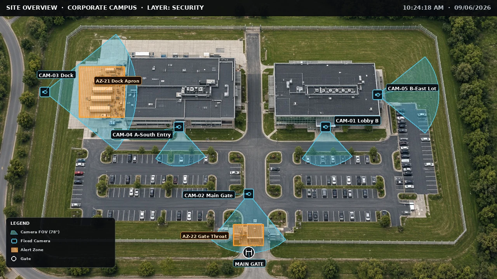

Lead the operation.
Develop people, set clear standards, and strengthen the handoffs, escalations, and judgment that keep a 24/7 operation working.
PEOPLE & OPERATIONSSECURITY LEADERSHIP. SYSTEMS THINKING.
I’m Shannon Brown. I turn complex risk into clear decisions—and build the teams and systems to act on them.
Leading a global security team
Enterprise security operations
Negotiated supplier savings
ALM · Information Management Systems
The hardest problems rarely fit inside one discipline.
My work connects security operations, business risk, and technology. Today, I lead a 24-member Global Security Operations Center for a Fortune 500 pharmaceutical enterprise through Allied Universal.
Before that, I worked across investment, regulated financial services, and international commercial leadership. That range shapes how I assess risk: understand what matters to the business, make the tradeoffs explicit, and give people a clear path to act.
Develop people, set clear standards, and strengthen the handoffs, escalations, and judgment that keep a 24/7 operation working.
PEOPLE & OPERATIONSConnect emerging threats and commercial exposure to business priorities. Turn incomplete information into useful executive communication.
RISK & GOVERNANCETranslate operational ideas into playbooks, training experiences, and software that make sound decisions easier to practice and repeat.
SYSTEMS & TECHNOLOGYAn operational perspective,
translated into working software.

The first hour.
The decisions that matter.
A decision simulation for converging physical, cyber, and intelligence signals. Practice separating facts from assumptions, choosing an operating posture, and documenting the reasoning behind it.
A public demonstration of operational decision craft. Designed for training, with an explicit decision log and exportable after-action review.
Decide before the picture is complete.
Make uncertainty and tradeoffs visible.
Leave a decision trail others can examine.
From cross-border commercial decisions to around-the-clock security leadership.
Full résuméAllied Universal · Cambridge, MA
Fortune 500 pharmaceutical client
Lead a 24-person, 24/7 global security operation. Set standards for triage, escalation, handoffs, and quality assurance; develop supervisors and analysts; coordinate critical events and brief client security leadership.
NYLIFE Securities & New York Life
Registered Representative · Agent
Advised individuals and business owners in a regulated environment, translating risk considerations and long-term objectives into clear financial recommendations.
Phoenix Far East Investment Group
Led U.S. market-entry and acquisition analysis. Reviewed contracts and advised the Chairman on cross-border deals, joint ventures, and supplier agreements across the United States, China, and Europe.
$7M in annual savings through primary-supplier negotiation.
Millennium Harbourview Hotel Xiamen
Also served as Commercial Manager
Reorganized the communications function in three months, led junior staff, and negotiated 20% year-over-year media savings while directing multichannel strategy.
HARVARD UNIVERSITY
Information Management Systems
Business Administration & Management
cum laudeSecurity leadership. Business risk. Better systems.
If that’s the conversation, I’d like to be part of it.